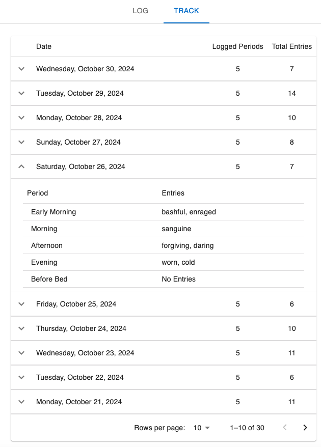

Software Engineer
I am a Canadian software engineer with 10 years of professional experience with full-stack enterprise web systems development.
Here are some fun projects I've made.
A mood tracker CRUD demonstrator web app
|  |
I have worked across the high-tech, government healthcare, finance (including fintech), and startup industries, gaining a diverse set of skills, contexts, and insights that allow me to adapt and excel in various environments.
At Wave Financial (H&R Block), I developed and maintained key features within the Payment Team, using Python and Django to build and scale financial services applications. My work involved cross-repo collaboration and aligned with my experience in MVP-inspired frameworks and messaging systems.
At Pivotal Inc. (VMWare), I gained hands-on experience with cloud-native technologies across multiple product subteams. This experience provided a strong foundation in application packaging, deployment, and configuration—key skills for leading teams in modern cloud-based environments.
I have led pair programming efforts to implement critical features and mentored new hires, guiding them in adopting best practices. I have also provided technical guidance and support to peers, ensuring alignment with company goals.
I developed a good foundation in engineering management through my Master’s in Engineering Management. Courses including Managing Talent and Organizations, Leadership Skills, and Engineering Management have equipped me with the skills necessary for effective team leadership, conflict management, and collaborative decision-making. The conceptual knowledge and the initiatives I took for leadership responsibilities in group projects have strengthened my leadership skills needed for engineering leadership.
Back to TopI have also embraced modern AI tools to enhance my productivity and code quality, experimenting with tools like GitHub Copilot, ChatGPT Teams, and JetBrains AI Assistant. These tools have allowed me to streamline my workflow through automating code creation for tasks of varying complexity and focus on delivering high-quality code.
My technical expertise, leadership experience, and passion for continuous learning through a self-driven growth mindset makes me a great fit for a Team Lead or Senior Software Engineer roles.
Back to Top